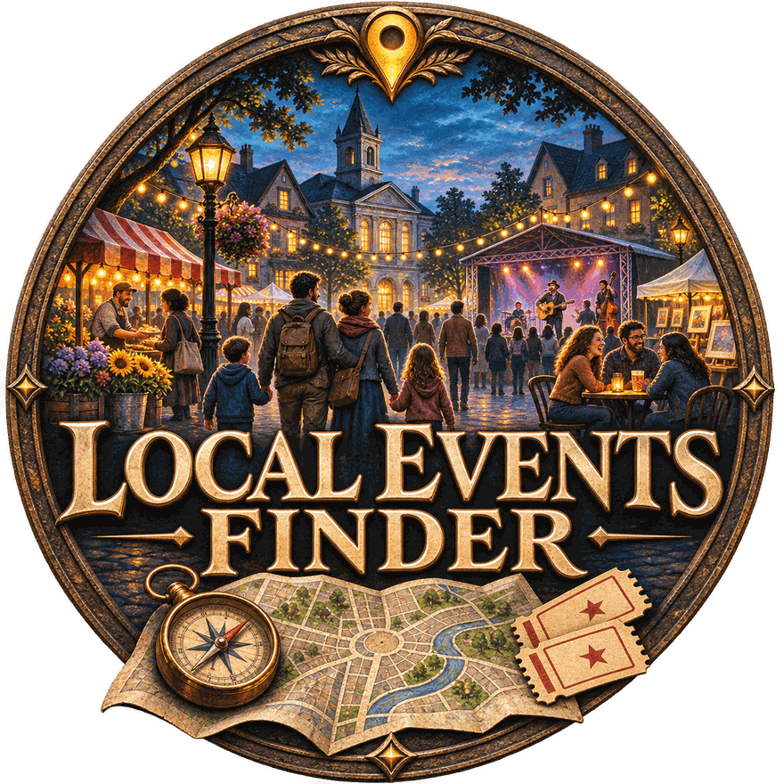

Find things to do near you. Pick a place or use your location, choose how far you're willing to go, and browse what's on: scheduled events and places you can visit any day, each tagged by type and, when it's meant for children, as kid friendly.
No account, no API keys. Your searches and tags stay on your device.
Type a town or use your location, then browse and filter right here. Browsers can't read some event sites directly, so this version may find fewer scheduled events than the Android app or the version you run on your computer.
Open the web appA native app with device GPS and the same search, tags and filters. Android 8.0 or newer.
Installed a version from before 1.2.0? Uninstall it first, because the app's signing key changed.
Download the APKThe most complete results, because it reads event sites directly. Needs Python 3.10 or newer.
git clone https://github.com/TheRealDeltrex/Local-Event-Finder
cd Local-Event-Finder
pip install -r requirements.txt
python app.pyIt opens in your browser at http://127.0.0.1:5001.